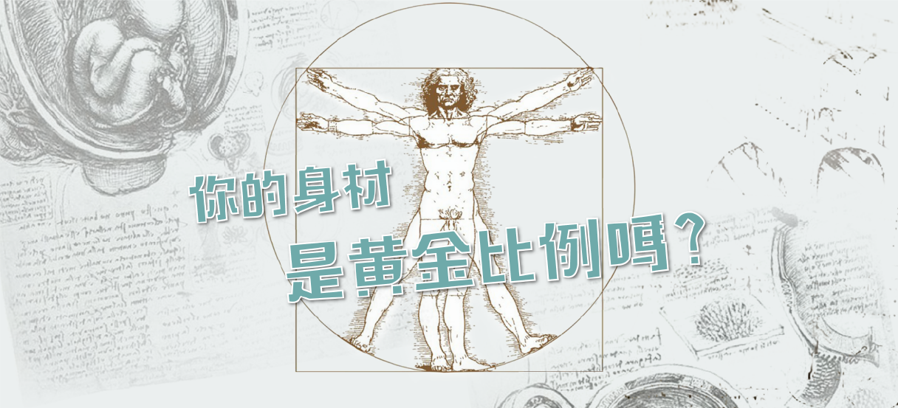

黃金比例以及維特魯威人
黃金分割具有嚴格的比例性、藝術性、和諧性，蘊藏著豐富的美學價值，呈現於不少動物和植物的外觀。現今很多工業產品、電子產品、建築物或藝術品均普遍應用黃金分割，展現其功能性與美觀性。
達文西按照一位古羅馬建築師，維特魯威(Vitruvius)所留下關於比例的學說，繪製出一個具黃金比例的人體圖像－維特魯威人。
黃金分割具有嚴格的比例性、藝術性、和諧性，蘊藏著豐富的美學價值，呈現於不少動物和植物的外觀。現今很多工業產品、電子產品、建築物或藝術品均普遍應用黃金分割，展現其功能性與美觀性。
達文西按照一位古羅馬建築師，維特魯威(Vitruvius)所留下關於比例的學說，繪製出一個具黃金比例的人體圖像－維特魯威人。